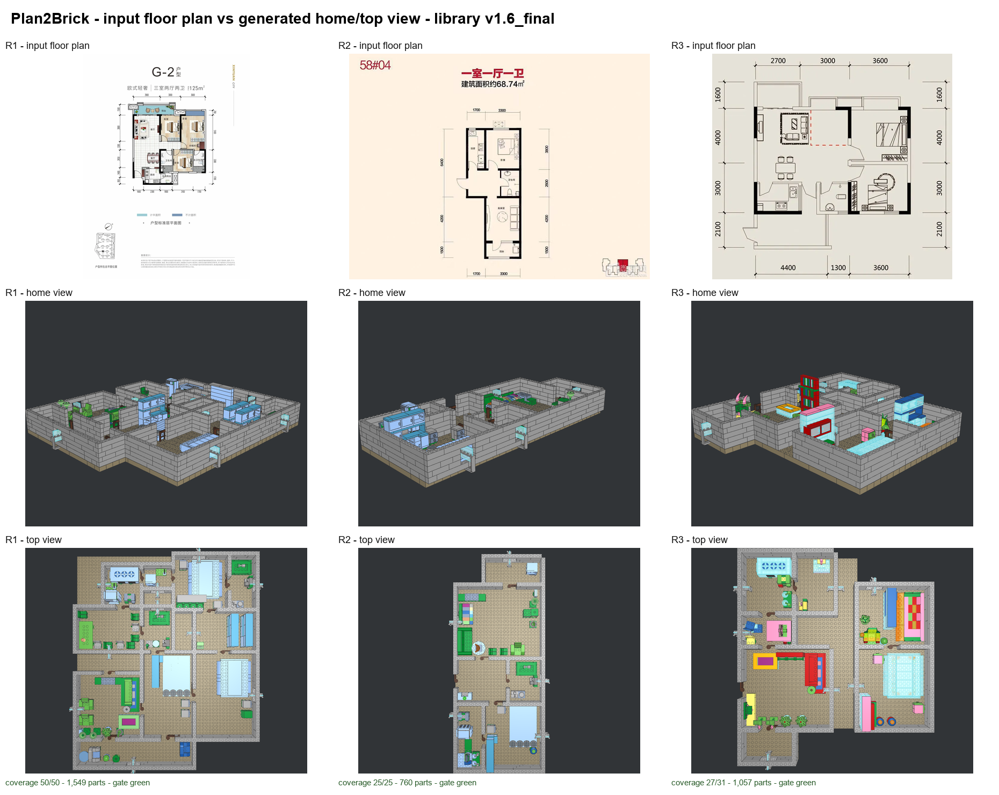
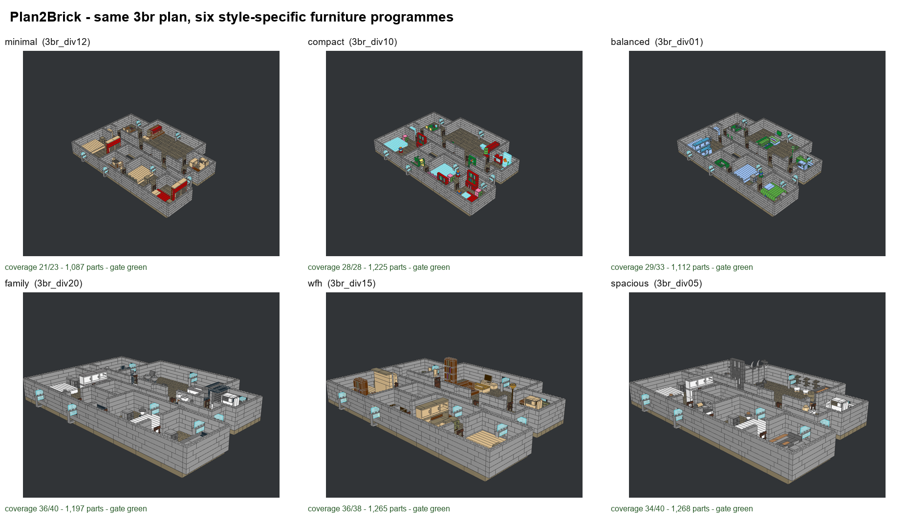
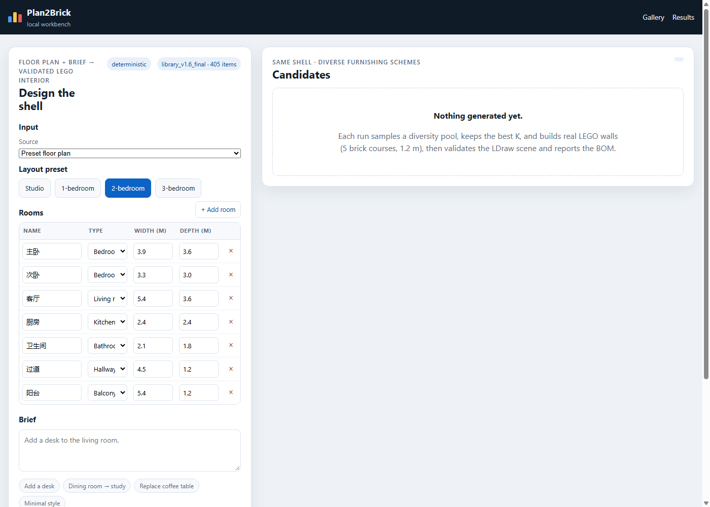

Latest results · 25 November 2026
Doors, circulation,
and a 405-item library
What changed since the 11 November benchmark update — and what is ready to demo.
405controlled library16 categories · 9,521 parts
3 / 3real plans gate-green0 cross-room and wall-furniture overlaps
6style programmesminimal / compact / balanced / family / wfh / spacious
1,350files in the tool package6.02 MB · selftest 10/10
The frozen benchmark still uses its 58-item controlled library; v1.6_final is the new default for the workbench and the packaged tool.
01
What changed since 11 November
- Real doors and windows. Openings are carved into the LEGO wall courses; door leaf
3861a, window frame3853and glass3855bare counted in the MPD and BOM. Door leaves are brown so they read differently from blue window glass. - Bathroom-aware door repair. A half-stud door-grid offset was corrected; blocked bathroom doors slide along the shared wall and are removed only when the same bathroom keeps another usable door.
- Circulation. A one-stud grid BFS checks door-to-door connectivity and the reachable floor ratio; low-priority furniture is removed only when it blocks a path.
- Room-level grouping. The solver now groups a dining table with chairs, a bed with bedside cabinet/lamp, and a sofa with TV and coffee table instead of placing every piece independently on a wall band.
- Style-specific programmes. Six styles change both the optional pieces and the target furniture size;
size_classpreference picks small items for compact/minimal, medium for wfh, and large for family/spacious. - Library v1.6_final. 340 v1.5 items + 16 v1.6 promotions + 49 review promotions; validate 405/405. Retrieval: text 339/405, shape 362/405, synonym top-1 54/56, top-3 56/56.
- Demo tool. The local workbench supports presets, uploaded floor plans (Claude/GPT perception), room editing, brief edits, 3/6/9 candidates, 3D preview, and MPD/BOM downloads. The packaged build is 1,350 files / 6.02 MB and passes selftest 10/10.
02
Three real floor plans

| Scene | Coverage | Parts | Gate | Circulation | VLM realism (Claude / GPT) |
|---|---|---|---|---|---|
| R1 | 50 / 50 | 1,549 | GREEN | True | 4 / 3 |
| R2 | 25 / 25 | 760 | GREEN | True | 3 / 4 |
| R3 | 27 / 31 | 1,057 | GREEN | True | 3 / 3 |
R3 drops four dining chairs in a compact dining room; R1/R2 are the cleanest demo scenes. All three have zero overlaps.
03
Same plan, six style programmes

| Style | Size bias | Programme delta | Coverage | Parts |
|---|---|---|---|---|
| minimal | 0.85 | remove plant/lamp/bookshelf/tv; chairs ≤2 | 21 / 23 | 1,087 |
| compact | 0.80 | remove plant/bookshelf; chairs ≤2 | 28 / 28 | 1,225 |
| balanced | 1.00 | base programme | 29 / 33 | 1,112 |
| family | 1.05 | +2 dining chairs, armchair, plant, lamp, second bedside pair | 36 / 40 | 1,197 |
| wfh | 0.95 | bedroom desk/chair/bookshelf + living desk/bookshelf | 36 / 38 | 1,265 |
| spacious | 1.15 | +2 plants, +2 lamps, bookshelf, +2 dining chairs | 34 / 40 | 1,268 |
04
The demo tool

- Run locally:
start-workbench.cmd, then openhttp://127.0.0.1:8000/app/workbench.html. - Modes: preset floor plan, upload real plan (Claude/GPT vision), or generate from room count.
- Edits: add / remove / replace / use / style in one sentence; candidates show style, palette and plan thumbnails.
- Outputs: 3D preview, MPD, BOM, placements JSON and scene IR.
- Package: 1,350 files / 6.02 MB; selftest 10/10; six-style 3br generation 23.1 s with 0 overlaps.
05
Limitations and next
- VLM realism is about 3.0–3.5 / 5; the demo uses three curated scenes, not a universal human-level claim.
- R3 is 27/31; four dining chairs are dropped because the room is compact. R1/R2 are the primary demo scenes.
- The frozen benchmark and its 58-item library are unchanged; v1.6_final is the new product library.
- Next: library v1.7 promotion from the current style/size campaign, targeted bath/sofa/chair/fridge/washer QC, and final Term-End packaging.
Contact: Xiao Chuanyi · Department of Computer Science and Engineering, CUHK · supervised by Prof. Philip Fu.